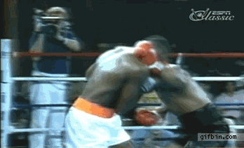

El boxeo tiene una historia antigua que se remonta a las civilizaciones de la antigua Grecia y Roma, donde se practicaba como parte de los Juegos Olímpicos desde el 688 a.C. en Grecia, con una modalidad de lucha que incluía el uso de los puños, aunque sin guantes. El boxeo como lo conocemos hoy comenzó a tomar forma en Inglaterra en el siglo XVIII, durante el periodo conocido como el "boxeo a la antigua", en el que los luchadores se enfrentaban a puños desnudos. Sin embargo, la disciplina se transformó con la introducción de las primeras reglas formales, conocidas como las "Reglas de Queensberry", en 1867, que establecieron el uso de guantes, el conteo de caídas y otras normativas de seguridad, lo que sentó las bases para el boxeo moderno. A partir de ahí, el boxeo comenzó a ganar popularidad en todo el mundo y a convertirse en un deporte organizado, con campeonatos y organizaciones que regían la práctica profesional. Hoy en día, el boxeo es uno de los deportes de combate más populares a nivel global, con una rica historia de campeones legendarios y eventos de gran prestigio.
Movilidad elevada con juego de pies sentrado en puños exclusivamente enfocado en la potencia entrenamiento duro y exigente tecnica destacada: upper cut
